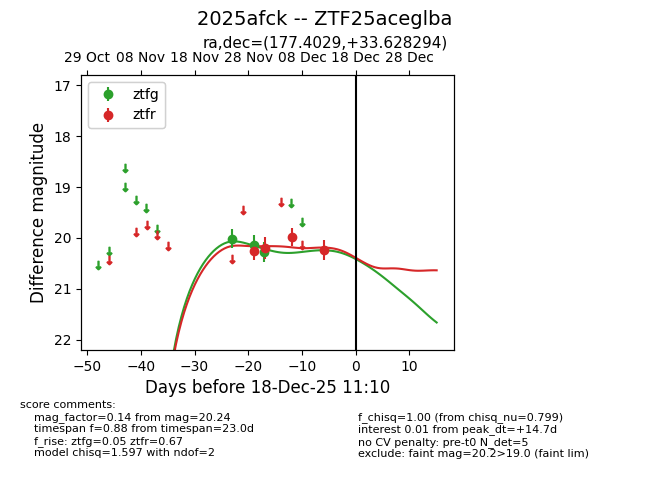
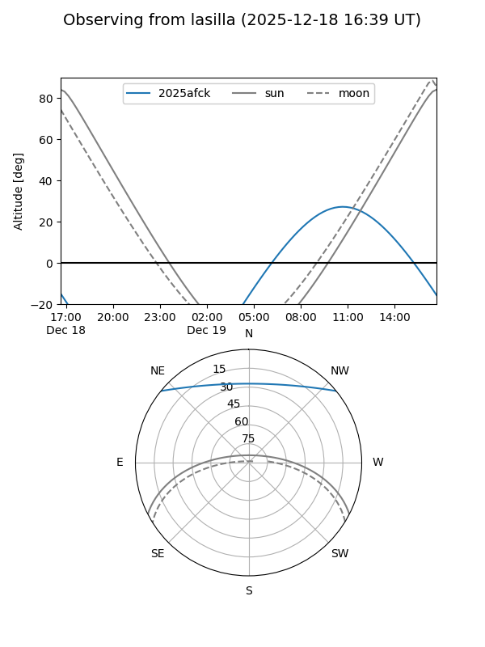
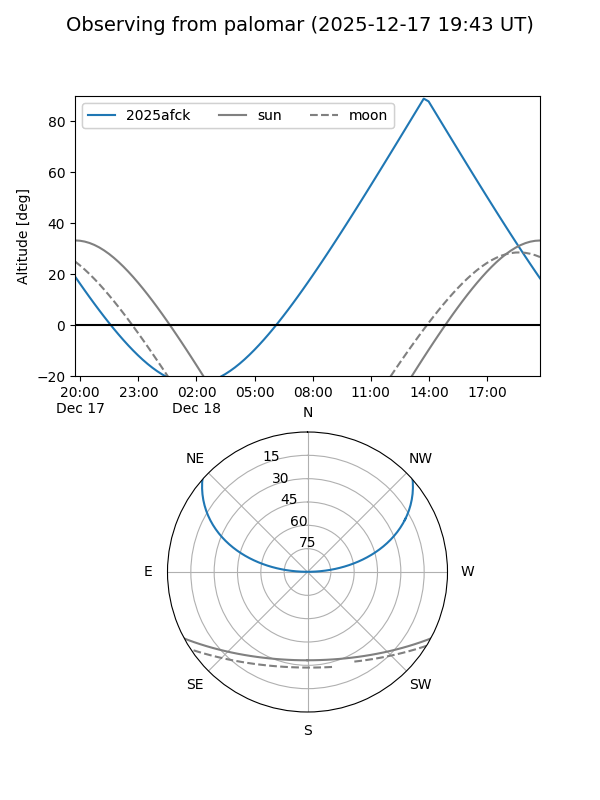
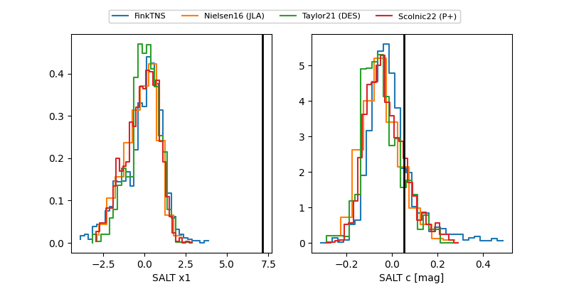

2025afck
Target 2025afck at 2025-12-18 11:17
Aliases and brokers:
FINK: fink-portal.org/ZTF25aceglba
Lasair: lasair-ztf.lsst.ac.uk/objects/ZTF25aceglba
ALeRCE: alerce.online/object/ZTF25aceglba
TNS: wis-tns.org/object/2025afck
YSE: ziggy.ucolick.org/yse/transient_detail/2025afck
alt names
ZTF25aceglba (ztf,fink_ztf)
2025afck (tns,yse)
Coordinates:
equatorial (ra, dec) = 177.4029,+33.62829
equatorial (HMS+DMS) = 11:49:36.69,+33:37:41.86
galactic (l, b) = (183.1615,+75.18803)
Photometry
last ztfg=20.28, ztfr=20.24
3 ztfg, 4 ztfr detections
Lightcurve

Visibility


Additional plots
